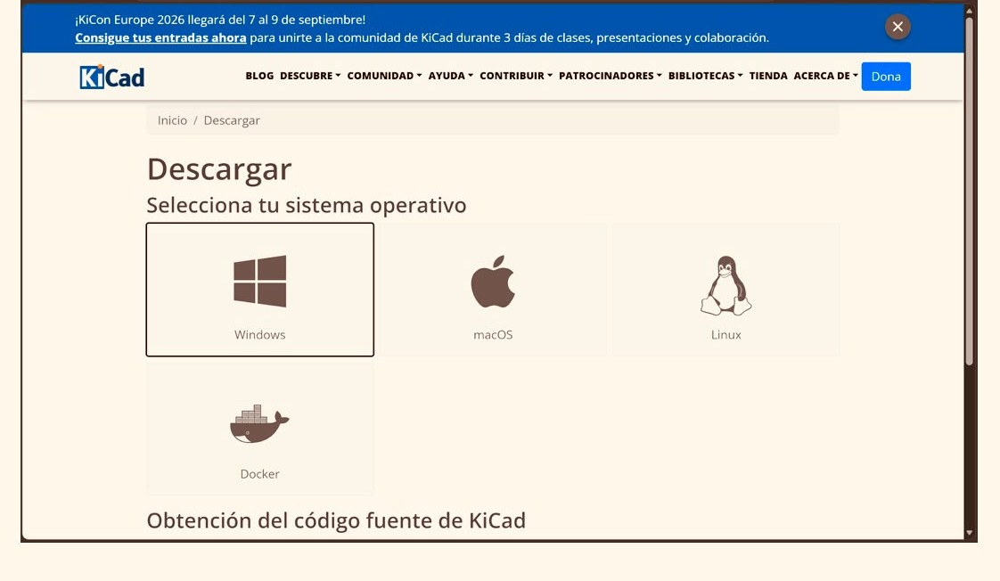

Flujo de Trabajo: Diseño y Manufactura CNC (KiCad + Mods)
Los ingenieros
 Sebastian Gomez Rodriguez
204486
Sebastian Gomez Rodriguez
204486
|
 Erik Andre Zepeda Tapia
204440
Erik Andre Zepeda Tapia
204440
|
Tabla de Contenido
- 1. Gestión del Entorno y Librerías
- 2. Captura Esquemática y Atajos Rápidos
- 3. Diseño Físico (PCB Layout) y Reglas de Diseño
- 4. Salidas de Fabricación y Control de Calidad
- 5. Requisitos Materiales y Preparación de Taller
- 6. Procesamiento CAM y Maquinado CNC (SRM-20)
- 7. Matriz de Resolución de Problemas (Troubleshooting)
1. Gestión del Entorno y Librerías
Esta documentación define el estándar operativo para la elaboración, exportación y fabricación de placas de circuito impreso (PCB) mediante fresado CNC local, garantizando la compatibilidad con el repositorio especializado de componentes para prototipado.
Arquitectura e Instalación
El gestor de proyectos opera como el núcleo centralizador para la administración de jerarquías, bases de datos de huellas y archivos de salida de manufactura. Descargue el ejecutable desde el portal oficial y seleccione un servidor de distribución geográficamente cercano:
🔗 Enlace de descarga: Portal oficial de descargas de KiCad



Despliegue de Librería FabLab
La integración de repositorios locales es indispensable para asegurar la correspondencia entre el diseño digital y el inventario físico del laboratorio.
- Navegue al menú Herramientas y ejecute el Administrador de complementos y contenidos.
- Localice el paquete FABLIB en la pestaña de bibliotecas y proceda con la instalación.
- Seleccione Aplicar cambios pendientes.
- Reinicie la instancia de KiCad obligatoriamente para indexar los nuevos símbolos y huellas en el sistema.

2. Captura Esquemática y Atajos Rápidos
El entorno esquemático define la topología lógica del circuito y establece las relaciones funcionales mediante símbolos normalizados.
Atajos de Teclado Fundamentales (Eeschema)
| Tecla | Acción Operativa | Propósito en el Flujo |
|---|---|---|
A |
Añadir símbolo | Abre el catálogo filtrando por la librería fablib. |
W |
Trazar cable (Wire) | Interconecta terminales de componentes físicamente. |
L |
Añadir etiqueta (Net Label) | Asigna identidades a nodos de red para evitar el cruce de líneas. |
R |
Rotar componente | Gira el símbolo seleccionado en ángulos de 90°. |
E |
Editar propiedades | Abre la configuración de valores, huellas e identificadores. |
Topología y Espacio de Trabajo
Configure la retícula de trabajo estrictamente en milímetros (mm) para mantener la escala normalizada. Estructure el plano mediante bloques funcionales (alimentación, interfaces de control, elementos activos) apoyándose en herramientas de texto y delimitadores visuales.


Instanciación y Conectividad
- Asignación de Símbolos (A): Invoque el selector de componentes y filtre exclusivamente por el directorio
fablib. Utilice componentes estandarizados como resistencias SMD 1206 o microcontroladores específicos (SeeedStudio XIAO RP2040). - Orientación (R): Ajuste la posición espacial de cada símbolo para optimizar el flujo visual.
- Enrutamiento Lógico (W / L): Conecte nodos cercanos con trazos directos. Para señales extensas, implemente etiquetas de red globales (VDD, GND, TX, RX) para evitar la saturación del plano.


Validación de Reglas (ERC)
Ejecute el Verificador de Reglas Eléctricas (ERC) para certificar la estabilidad de la red. Si el sistema arroja advertencias sobre pines de alimentación no controlados, asigne etiquetas PWR_FLAG. El reporte debe resultar libre de conflictos antes de avanzar.

3. Diseño Físico (PCB Layout) y Reglas de Diseño
Esta fase traduce la topología lógica en una topometría física, estableciendo dimensiones de tarjeta, restricciones espaciales y trazos de cobre.
Sincronización de Datos
Ejecute el comando Actualizar la placa desde el esquemático (F8). Este proceso importa la lista de redes (netlist) y los encapsulados físicos al área de trabajo.


Gestión de Capas y Ruteo
- Restricciones de Pistas: En Editar tamaños predefinidos, fije un grosor de 0.4 mm para pistas de señal/datos y 0.8 mm para líneas de potencia.
- Trazado: Utilice la herramienta de enrutamiento (X) ejecutando cambios de dirección a 45 grados. Evite ángulos rectos para optimizar el paso de la fresa CNC.
- Puentes de Salto: Ante la imposibilidad de rutear sin cruces, retorne al esquemático, integre una resistencia puente de 0 ohms, y sincronice los cambios.


Geometría y Planos de Cobre
- Contorno de Placa: Cambie a la capa
Edge.Cutsy defina una geometría completamente cerrada. Asigne un grosor de trazo de 2.0 mm. - Planos de Tierra: Genere zonas de relleno de cobre (Ctrl + Shift + Z) asignadas a GND y actualice los polígonos (B) para maximizar la disipación térmica.
- Mecánica y Serigrafía: Añada referencias de texto (T) y genere matrices de perforación paramétricas (Ctrl + T).


4. Salidas de Fabricación y Control de Calidad
Inspección Final (DRC)
Ejecute el Verificador de Reglas de Diseño (DRC) para asegurar que no existen cortocircuitos, colisiones mecánicas, ni violaciones a las tolerancias de la máquina CNC.


Exportación Vectorial (SVG)
Navegue a Archivo > Exportar > SVG... para compilar los paquetes de manufactura aplicando los siguientes parámetros:
- Modo de impresión: Seleccione Blanco y negro.
- Lienzo: Active la opción Área de la placa únicamente (Ajustar página a la placa) para evitar descalibraciones del punto de origen.
- Capas: Exporte de forma independiente los archivos
pistas.svg(F.Cu),contorno.svg(Edge.Cuts) yperforaciones.svg.


5. Requisitos Materiales y Preparación de Taller
Antes de proceder con el envío de archivos al software CAM, verifique la disponibilidad del material físico en la mesa de trabajo:
- Placa fenólica/FR4: Baquelita o fibra de vidrio con una capa de cobre (1 oz/ft²), limpia de óxido.
- Cinta doble cara de alta adhesión: Para fijación plana sobre la cama de sacrificio de la CNC sin ondulaciones.
- Herramientas de corte:
- Broca de grabado en V (V-Bit 10°–60° / 0.2–0.4 mm) o fresa plana de 1/64" para trazado.
- Broca helicoidal de 0.8 mm para perforaciones THT.
- Fresa recta de 2.0 mm (1/8") para el corte periférico de contorno.
- Insumos de limpieza y acabado: Alcohol isopropílico, fibra abrasiva fina y cautín con soldadura de estaño/plomo.
6. Procesamiento CAM y Maquinado CNC (SRM-20)
Configuración de Plataforma CAM
Inicie la herramienta web de generación de código G cargando el entorno de trabajo navegando a Programs > Open Program > Roland SRM-20 milling machine > mill 2D PCB:
🔗 Plataforma CAM recomendada: Mods Community (Servidor Oficial)
🌐 Servidor espejo alternativo: Servidor CBA - MIT
Secuencia de Maquinado Obligatoria
Ajuste los parámetros según la siguiente tabla e introduzca los archivos SVG en la máquina en este orden estricto:
| Operación | Archivo | Herramienta | Velocidad | Parámetros Específicos |
|---|---|---|---|---|
| 1. Perforaciones | perforaciones.svg |
Broca 0.8 mm | 0.3 – 0.4 mm/s | Profundidad pasada: 0.254 mm. Total: 1.7 mm. Se ejecuta primero para aprovechar la rigidez de la placa. |
| 2. Trazado | pistas.svg |
V-Bit 0.4 mm | 4.0 mm/s | Activar Invert: Lo negro representa el área a remover. Offset: 4 pasadas. |
| 3. Contorno | contorno.svg |
Fresa 2.0 mm | 1.5 – 4.0 mm/s | Profundidad total: 1.7 mm. Offset: 1 pasada. Separa la tarjeta del panel. |
7. Matriz de Resolución de Problemas (Troubleshooting)
| Síntoma / Problema | Causa Probable | Acción Correctiva |
|---|---|---|
| Cobre no retirado por completo (pistas unidas). | Profundidad Z insuficiente o placa desnivelada. | Aumentar la profundidad de corte en Mods en pasos de 0.05 mm o recalibrar el origen Z en la zona más baja. |
| Pistas levantadas o rotas tras el fresado. | Velocidad de avance excesiva o broca desgastada. | Reducir la velocidad a 3.0 mm/s y reemplazar la herramienta por una broca nueva sin muescas. |
| Desfase de origen entre orificios y pistas. | Exportación SVG con margen de lienzo desigual. | Verificar que la casilla Board area only (Ajustar a la placa) estuviera activa en todas las capas al exportar desde KiCad. |
| Rotura de la broca de perforación (0.8 mm). | Velocidad de bajada en Z demasiado rápida. | Asegurar que la velocidad vertical en taladrado no supere los 0.4 mm/s. |